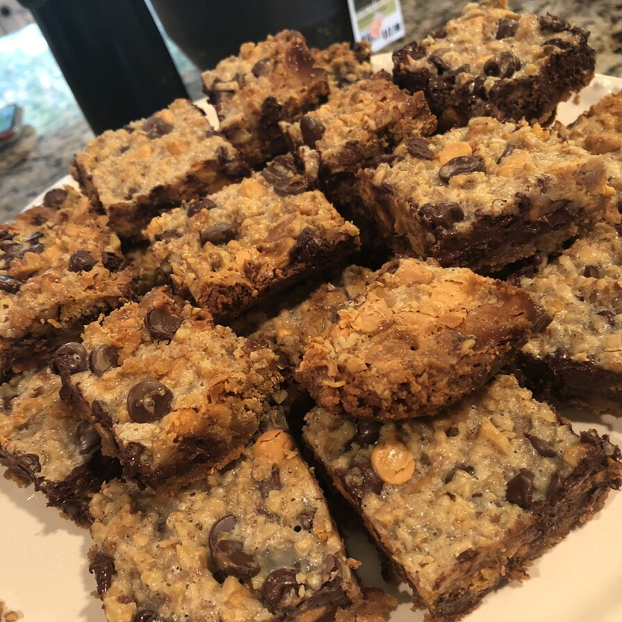

Seven Layer Bars

Ingredients:
- ½ cup unsalted butter
- 1 ½ cups graham cracker crumbs
- 1 cup semisweet chocolate chips
- 1 cup butterscotch chips
- 1 cup chopped walnuts
- 1 (14 ounce) can sweetened condensed milk
- 1 ⅓ cups shredded coconut
Directions:
- Preheat oven to 350 degrees F (180 degrees C).
- Place butter in 13 x 9 inch pan and melt in oven. Swirl to coat bottom and sides with butter.
- Spread graham cracker crumbs evenly over bottom of pan. Layer chocolate chips, butterscotch chips, and nuts over crumbs. Pour condensed milk over nuts. Sprinkle coconut over condensed milk.
- Bake until edges are golden brown, about 25 minutes. Let cool before cutting into bars.